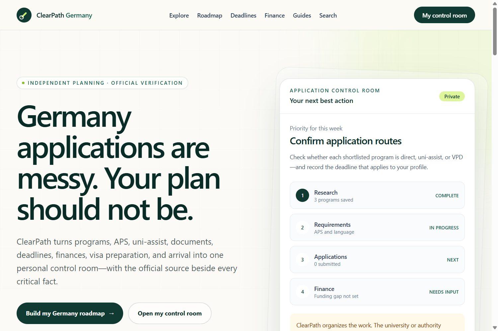
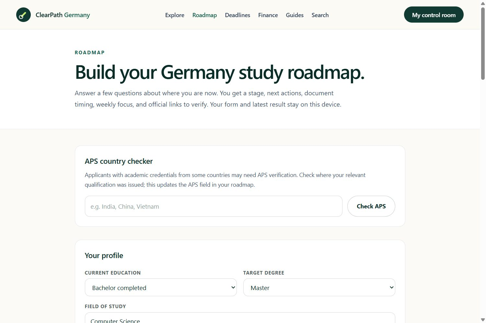

Turn uncertainty into a plan.
Programs, APS, uni-assist, documents, finance, visa preparation, and arrival become one navigable workflow.
- Role
- Product, interface, implementation
- Stack
- Next.js, FastAPI, Python
Nithin Polavarapu / AI Product Builder
I turn complex workflows into clear, verifiable next steps.

ClearPath Germany turns a fragmented application process into a personal control room with official verification built into the flow.
Open the live productPrograms, APS, uni-assist, documents, finance, visa preparation, and arrival become one navigable workflow.
Critical facts stay connected to official sources so the interface supports verification instead of pretending uncertainty does not exist.
The control room organizes the work around weekly priorities, saved programs, requirements, applications, and finance.
Explore ClearPath

The product frames a complicated journey around the next best action.
Private research build
An anti-memory experiment for deciding what an AI agent should retain, retrieve, or let go of as work moves across tasks.
The model is still being explored. This interactive diagram explains the decision, not a claimed production result.
No percentage bars. Each capability points to work where it is being used.
Roadmaps, deadlines, comparisons, source quality, and decision-oriented interfaces in ClearPath Germany.
Next.js / FastAPI / PythonPreprocessing, supervised learning, model evaluation, neural networks, and inference prototypes.
PyTorch / TensorFlow / scikit-learnStructured and semi-structured data, MongoDB and SQL concepts, Git workflows, and deployable web products.
MongoDB / MySQL / GitMy work sits between machine learning, product thinking, and careful information design. I start with what a person or agent needs to decide, then shape the model and interface around that moment.
CodTech IT Solutions
Micro Information Technology Services
Parul University / 7.76 CGPA
Andrew Ng / Coursera
Coursera
Available for internships and collaboration
Share the context, what you have tried, and the decision you want to make clearer.
nithinpolavarapu@gmail.com